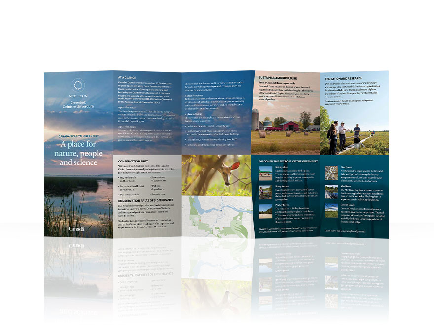

<!--Work Preview section-->
<section class="offset section">
			
	<!--Inner content-->
	<div class="innerContent">

		<!--Container-->
		<div class="container clearfix">
			<div class="fifteen columns">
				<div class="work-preview-close"></div>
			</div>
		</div>
		<!--Container-->
		
		<!--Container-->
		<div class="container clearfix">

			<div class="fifteen columns">

				<!--slider-->
				<div class="work-preview-slider clearfix flexslider" >

					<div>

						<ul class="slides">
							
							<li>
								
							</li>
							
							<li>
								
							</li>

							<li>
								
							</li>

							<li>
								
							</li>

						</ul>

					</div>
					
				</div>
				<!--slider-->

			</div>


			<div class="fifteen columns work-info">
				<h1 class="title">NCC Greenbelt Brochure<br><span>Print</span></h1>
				<p>Canada’s Capital Greenbelt stretches from west to east Ottawa and is divided into six main sectors, each with its own personality and things to offer.</p>

				<p>This bilingual, double-sided brochure was designed as an extension of the Greenbelt map. It acts as a summarized and compiled version of all the information found on the map in a more manageable-sized document.</p>

				<p>Text formatting and photos from the map were used to create a cohesive bridge between the two pieces. The NCC curve was implemented in a stylistic way to separate the panels and provide visual interest. A miniaturized and simplified version of the map was also included to give some insight on the Greenbelt’s whereabouts in the city and how each sector is separated.</p>


				<!--<div class="social-icons">
					<ul>
						<li><i class="step fi-heart"></i><span>100</span></li>
						<li><i class="step fi-social-facebook"></i><span>620</span></li>
						<li><i class="step fi-social-twitter"></i><span>450</span></li>
						<li><i class="step fi-social-pinterest"></i><span>100</span></li>
					</ul>
				</div>-->

			</div>


		</div>
		<!--Container-->
	
	</div>
	<!--Inner content-->

	
</section>